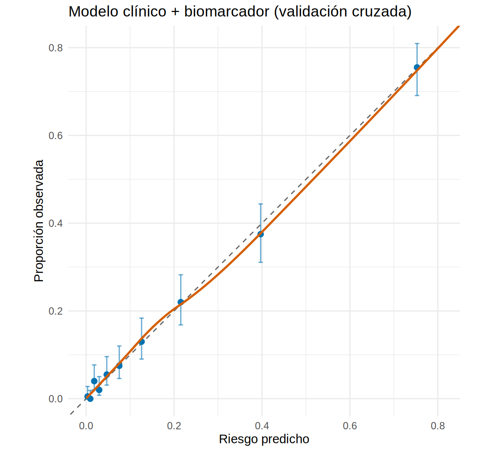
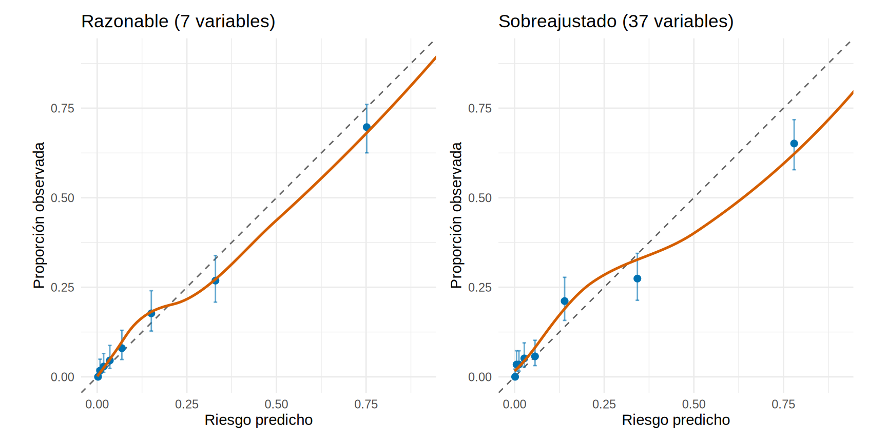
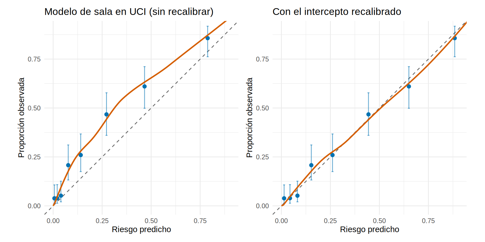
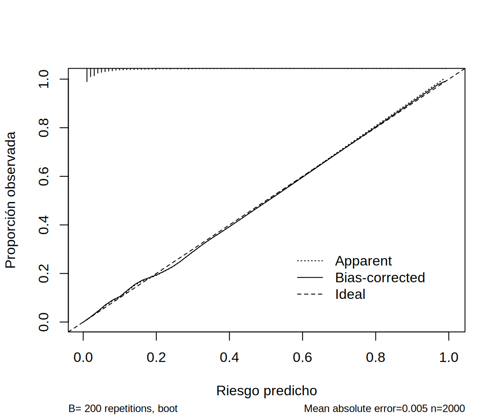

library(tidyverse)
library(patchwork)
source("R/funciones_extra_cap16.R")
dx <- read_csv("Bases/dx_lra.csv", show_col_types = FALSE) |> # datos SIMULADOS (Cap. 16)
mutate(log2_ngal = log2(ngal), log_creat = log(creat_ingreso))
f_clin <- lra ~ I(edad / 10) + diabetes + sepsis + nefrotoxicos + log_creat + entorno
f_full <- update(f_clin, . ~ . + log2_ngal)
## Probabilidades "fuera de muestra" (validación cruzada de 10 particiones): cada paciente se predice
## con un modelo que no lo vio, como en 16.4. Así la calibración no se evalúa con trampa.
p_full <- prob_cv(f_full, dx, K = 10, semilla = 165)
p_clin <- prob_cv(f_clin, dx, K = 10, semilla = 165)Calibración: cuando el modelo dice “30 %”, ¿de verdad es 30 %?
Nota🩺 Escenario
Tu modelo marca a un paciente con “40 % de riesgo de LRA ≥ 2” y activas el paquete KDIGO. Si el modelo estuviera mal calibrado y ese “40 %” en realidad fuera del 70 %, habrías subestimado el riesgo; si fuera del 15 %, habrías sobretratado. La discriminación (AUC) solo te dijo que el modelo ordena bien a los pacientes. La calibración te dice si los números que da son creíbles.
La calibración es el talón de Aquiles de los modelos predictivos (Van Calster et al., 2019): se revisa mucho menos que el AUC y es la que más falla al llevar un modelo a otro hospital. Sin buenas probabilidades, ni los umbrales de decisión (16.6) ni las conversaciones con el paciente tienen sentido.
Lo que vamos a hacer
- Dibujar un gráfico de calibración y leerlo.
- Resumir la calibración con el intercepto (calibración en lo grande), la pendiente y el puntaje de Brier.
- Ver dos formas típicas de mala calibración (sobreajuste y cambio de entorno) y cómo recalibrar.
- Entender por qué la prueba de Hosmer-Lemeshow se desaconseja.
Paso 1. Discriminar bien no es calibrar bien
Para ver que son cosas distintas, hagamos una “travesura”: tomamos las probabilidades del modelo y las distorsionamos (las hacemos más extremas y las desplazamos hacia abajo). El orden de los pacientes no cambia, así que el AUC es exactamente el mismo.
lp <- qlogis(p_full)
p_distorsionada <- plogis(2 * lp - 1) # el doble de extrema y desplazada hacia arriba
tibble(version = c("Probabilidades originales", "Probabilidades distorsionadas"),
auc = c(auc_rapida(p_full, dx$lra), auc_rapida(p_distorsionada, dx$lra)),
riesgo_medio_predicho = c(mean(p_full), mean(p_distorsionada)),
proporcion_observada = mean(dx$lra)) |>
mutate(across(where(is.numeric), \(x) round(x, 3)))# A tibble: 2 × 4
version auc riesgo_medio_predicho proporcion_observada
<chr> <dbl> <dbl> <dbl>
1 Probabilidades originales 0.886 0.167 0.168
2 Probabilidades distorsionadas 0.886 0.092 0.168Qué vemos: el AUC es idéntico (0.886), pero las probabilidades distorsionadas predicen un riesgo medio de 9 % cuando la proporción real de LRA es del 17 %. El AUC no puede detectar esto. Para eso hay que mirar la calibración.
Paso 2. El gráfico de calibración
Se agrupan los pacientes por su riesgo predicho (por ejemplo, en diez grupos del mismo tamaño) y se compara, en cada grupo, el riesgo predicho promedio (eje x) con la proporción observada de LRA (eje y). Si el modelo está calibrado, los puntos caen sobre la diagonal.
# A tibble: 10 × 7
g n predicho observado eventos ic_inf ic_sup
<int> <int> <dbl> <dbl> <dbl> <dbl> <dbl>
1 1 200 0.003 0.005 1 0.001 0.028
2 2 200 0.009 0 0 0 0.019
3 3 200 0.018 0.04 8 0.02 0.077
4 4 200 0.03 0.02 4 0.008 0.05
5 5 200 0.047 0.055 11 0.031 0.096
6 6 200 0.075 0.075 15 0.046 0.12
7 7 200 0.126 0.13 26 0.09 0.184
8 8 200 0.215 0.22 44 0.168 0.282
9 9 200 0.397 0.375 75 0.311 0.444
10 10 200 0.753 0.755 151 0.691 0.809grafico_calibracion(p_full, dx$lra, grupos = 10, titulo = "Modelo clínico + biomarcador (validación cruzada)")
Qué vemos: los diez puntos (con su IC 95 %) siguen la diagonal de cerca. Por ejemplo, en el grupo de mayor riesgo el modelo predice 75 % y se observa 76 %. La línea naranja es una curva suavizada (loess) que no depende de cómo agrupes. Lee siempre los dos: puntos y curva. En la práctica, con pocos eventos, el gráfico es ruidoso y los grupos con pocos pacientes tienen IC muy anchos.
Paso 3. Resumirla en números: intercepto, pendiente y O:E
Dos números describen casi todo lo que puede ir mal. Se obtienen ajustando una pequeña regresión logística del desenlace real sobre el logit del riesgo predicho:
- Calibración en lo grande (calibration-in-the-large, CITL): ¿el modelo, en promedio, sobre o subestima el riesgo? Se estima con un intercepto, dejando la pendiente en 1. Ideal = 0. Un valor > 0 significa que el modelo subestima el riesgo; < 0, que lo sobreestima. Su primo es el cociente O:E (observados/esperados), con ideal 1.
- Pendiente de calibración: ¿las predicciones son demasiado extremas o demasiado tímidas? Ideal = 1. Una pendiente < 1 indica predicciones demasiado extremas (típico del sobreajuste: los riesgos altos son menos altos, y los bajos menos bajos, de lo que dice el modelo); > 1, demasiado conservadoras.
resumen_calibracion(p_full, dx$lra) |> mutate(across(everything(), \(x) round(x, 3)))# A tibble: 1 × 7
intercepto_CITL intercepto_recta pendiente O_E brier brier_escalado ICI
<dbl> <dbl> <dbl> <dbl> <dbl> <dbl> <dbl>
1 0.001 -0.028 0.974 1 0.087 0.378 0.006Qué vemos: la calibración en lo grande es de 0 (O:E = 1) y la pendiente de 0.97: casi ideales (0 y 1). El ICI (integrated calibration index) es el promedio de la distancia absoluta entre la curva suavizada y la diagonal: 0.006, es decir, en promedio el modelo se equivoca unos 0.6 puntos porcentuales. Esto coincide con lo que reporta rms::val.prob() (nuestro “intercepto de la recta” corresponde a su Intercept):
Paso 4. El puntaje de Brier
El puntaje de Brier es el error cuadrático medio de las probabilidades: para cada paciente, \((p - y)^2\) con \(y\) = 1 si tuvo LRA y 0 si no, promediado. Va de 0 (perfecto) a 0.25 (un modelo que siempre dice 50 %), y mezcla discriminación y calibración. Para saber si es “bueno” conviene compararlo con un modelo sin información (que siempre predice la prevalencia): el Brier escalado es \(1 - \text{Brier}/\text{Brier}_{\text{nulo}}\), algo parecido a un \(R^2\).
# A tibble: 2 × 5
modelo brier brier_escalado pendiente intercepto_CITL
<chr> <dbl> <dbl> <dbl> <dbl>
1 Clínico 0.121 0.134 0.964 0.002
2 Clínico + biomarcador 0.087 0.378 0.974 0.001[1] 0.1394438Qué vemos: el Brier baja de 0.121 (clínico) a 0.087 (con biomarcador), y el Brier escalado sube de 0.13 a 0.38. Ambos modelos están bien calibrados (pendientes cercanas a 1); la mejora del Brier viene sobre todo de la discriminación del biomarcador. Para el “modelo nulo” el Brier sería 0.139.
Paso 5. Dos formas típicas de mala calibración
5a. Sobreajuste: demasiadas variables, pocos eventos
Desarrollamos el modelo en 600 pacientes y lo validamos en los otros 1 400. Comparamos el modelo “razonable” (7 variables) con uno sobreajustado, al que añadimos 30 variables de puro ruido (simuladas, sin relación con la LRA):
set.seed(165)
idx <- sample(nrow(dx), 600)
ruido <- matrix(rnorm(nrow(dx) * 30), ncol = 30, dimnames = list(NULL, paste0("z", 1:30))) # 30 variables de ruido
dxr <- bind_cols(dx, as_tibble(ruido))
des <- dxr[idx, ]; val <- dxr[-idx, ]
f_ruido <- as.formula(paste("lra ~ I(edad / 10) + diabetes + sepsis + nefrotoxicos + log_creat + entorno + log2_ngal +",
paste0("z", 1:30, collapse = " + ")))
m_razonable <- glm(f_full, data = des, family = binomial)
m_sobre <- glm(f_ruido, data = des, family = binomial)
p_val_razonable <- predict(m_razonable, val, type = "response")
p_val_sobre <- predict(m_sobre, val, type = "response")
tibble(modelo = c("Razonable (7 variables)", "Sobreajustado (37 variables)"),
AUC_aparente = c(auc_rapida(fitted(m_razonable), des$lra), auc_rapida(fitted(m_sobre), des$lra)),
AUC_validacion = c(auc_rapida(p_val_razonable, val$lra), auc_rapida(p_val_sobre, val$lra)),
pendiente_validacion = c(resumen_calibracion(p_val_razonable, val$lra)$pendiente, resumen_calibracion(p_val_sobre, val$lra)$pendiente)) |>
mutate(across(where(is.numeric), \(x) round(x, 3)))# A tibble: 2 × 4
modelo AUC_aparente AUC_validacion pendiente_validacion
<chr> <dbl> <dbl> <dbl>
1 Razonable (7 variables) 0.898 0.883 0.834
2 Sobreajustado (37 variables) 0.911 0.864 0.657g1 <- grafico_calibracion(p_val_razonable, val$lra, 8, "Razonable (7 variables)", limite = 0.9)
g2 <- grafico_calibracion(p_val_sobre, val$lra, 8, "Sobreajustado (37 variables)", limite = 0.9)
g1 | g2
Qué vemos: el modelo sobreajustado luce mejor en los datos de desarrollo (AUC aparente 0.911 frente a 0.898), pero en pacientes nuevos su AUC cae a 0.864 (frente a 0.883 del modelo razonable) y su pendiente de calibración es de 0.66: sus riesgos altos son demasiado altos y los bajos demasiado bajos. Es la firma del sobreajuste: con solo 105 casos de LRA en el desarrollo, 37 parámetros son demasiados (menos de 3 eventos por parámetro) y el modelo aprendió ruido. Con la validación interna de 16.4 (y del Cap. 17) se detecta antes de usarlo.
5b. El mismo modelo en otro entorno
Un hospital con solo salas desarrolla el modelo (con el biomarcador, sin la variable entorno) y otro lo usa en su UCI. El modelo ordena bien, pero ¿acierta con los números?
sala <- filter(dx, entorno == "Sala"); uci <- filter(dx, entorno == "UCI")
f_sala <- lra ~ I(edad / 10) + diabetes + sepsis + nefrotoxicos + log_creat + log2_ngal
m_sala <- glm(f_sala, data = sala, family = binomial)
p_uci <- predict(m_sala, uci, type = "response") # modelo de sala, aplicado en UCI
resumen_calibracion(p_uci, uci$lra) |> mutate(across(everything(), \(x) round(x, 3)))# A tibble: 1 × 7
intercepto_CITL intercepto_recta pendiente O_E brier brier_escalado ICI
<dbl> <dbl> <dbl> <dbl> <dbl> <dbl> <dbl>
1 0.773 0.687 0.934 1.40 0.144 0.333 0.092 AUC_en_UCI riesgo_predicho_medio proporcion_observada
0.867 0.226 0.316 Qué vemos: el AUC en UCI sigue siendo alto (0.87), pero el modelo subestima el riesgo: predice en promedio 23 % cuando se observa 32 % (calibración en lo grande = 0.77, O:E = 1.4). Los pacientes de UCI tienen un riesgo basal más alto del que el modelo de sala “conoce”.
La buena noticia: este tipo de error se repara fácil con una recalibración. La más sencilla corrige solo el intercepto (se estima con una regresión logística del desenlace sobre el logit predicho, usando el logit como offset, es decir, con pendiente fija en 1). Se hace en una muestra local pequeña y no hace falta reajustar todo el modelo:
correccion_del_intercepto
0.77 resumen_calibracion(p_uci_recal, uci$lra) |> mutate(across(everything(), \(x) round(x, 3)))# A tibble: 1 × 7
intercepto_CITL intercepto_recta pendiente O_E brier brier_escalado ICI
<dbl> <dbl> <dbl> <dbl> <dbl> <dbl> <dbl>
1 0 -0.035 0.934 1 0.133 0.385 0.013g3 <- grafico_calibracion(p_uci, uci$lra, 8, "Modelo de sala en UCI (sin recalibrar)", limite = 0.9)
g4 <- grafico_calibracion(p_uci_recal, uci$lra, 8, "Con el intercepto recalibrado", limite = 0.9)
g3 | g4
Qué vemos: tras sumar 0.77 al logit, el cociente O:E pasa de 1.4 a 1 y el ICI de 0.09 a 0.01. Esta es la lógica de la validación externa y la actualización de modelos que veremos en el Cap. 17: antes de usar un modelo en otro lugar, verifica la calibración localmente y recalibra si hace falta. Nota que se evaluó en los mismos pacientes con los que se estimó la corrección: es una ilustración, no una validación independiente.
Paso 6. Por qué se desaconseja Hosmer-Lemeshow
La prueba de Hosmer-Lemeshow divide a los pacientes en g grupos de riesgo (casi siempre 10), compara observados contra esperados con una χ² y da un valor p. Se usa mucho, pero tiene problemas serios (Hosmer et al., 1997):
# A tibble: 6 × 4
grupos chi2 gl valor_p
<dbl> <dbl> <dbl> <dbl>
1 5 1.9 3 0.604
2 8 3.2 6 0.79
3 10 8.6 8 0.38
4 12 6.2 10 0.796
5 15 11 13 0.612
6 20 17.1 18 0.516# A tibble: 1 × 4
grupos chi2 gl valor_p
<dbl> <dbl> <dbl> <dbl>
1 10 76.3 8 2.70e-13Qué vemos: con el modelo bien calibrado, el valor p cambia de 0.38 a 0.8 solo por cambiar el número de grupos. Con el modelo mal calibrado el valor p es diminuto, pero tampoco te dice cómo ni dónde falla (¿subestima? ¿en el riesgo alto?). Con pocos pacientes casi nunca detecta nada, y con muchos “detecta” desviaciones sin importancia clínica.
Mejor alternativa: el gráfico de calibración (con curva suavizada), la calibración en lo grande, la pendiente y el ICI, con sus IC. Con el paquete rms, la curva de calibración corregida del optimismo por bootstrap se obtiene así:

n=2000 Mean absolute error=0.005 Mean squared error=4e-05
0.9 Quantile of absolute error=0.011Qué vemos: la curva “bias-corrected” (corregida del optimismo) casi coincide con la diagonal ideal. Debajo del gráfico rms informa el error absoluto medio de la calibración (parecido en espíritu al ICI).
Advertencia⚠️ Trampas de la calibración
- Evaluarla en los mismos datos con que se ajustó el modelo da, casi siempre, una calibración perfecta (intercepto 0, pendiente 1) por construcción. Usa validación cruzada, bootstrap o datos nuevos.
- La calibración no se “traslada” sola: cambia con la prevalencia, el espectro y el laboratorio. Verifícala en tu población antes de usar un modelo publicado.
- Un modelo bien calibrado “en promedio” puede estar mal calibrado en los extremos, justo donde se toman las decisiones. Mira la curva completa, no solo el intercepto.
Importante🎯 En resumen
- La calibración pregunta si los riesgos predichos coinciden con los observados; el AUC no la ve (un modelo distorsionado puede tener el mismo AUC).
- Se evalúa con el gráfico de calibración (puntos + curva suavizada), la calibración en lo grande (ideal 0), la pendiente (ideal 1; < 1 = sobreajuste) y el Brier (con su versión escalada).
- El sobreajuste y el cambio de entorno son las dos causas más comunes de mala calibración; la segunda se arregla muchas veces con una recalibración sencilla.
- No uses Hosmer-Lemeshow: depende del número de grupos y del tamaño de muestra, y no dice dónde falla.
- Evalúa la calibración fuera de la muestra de desarrollo.
Ejercicio
- Repite el gráfico de calibración con 5 grupos y con 20 grupos. ¿Qué cambia en la lectura? ¿Y en la curva suavizada?
- En el Paso 5b, en lugar de corregir solo el intercepto, ajusta
glm(lra ~ lp_uci, data = uci, family = binomial)(recalibración con intercepto y pendiente). ¿Qué pendiente sale? ¿Mejora el ICI? - Calcula la calibración del modelo clínico (sin biomarcador) desarrollado en sala y aplicado en UCI. ¿Es peor o mejor que la del modelo con biomarcador? ¿Por qué?